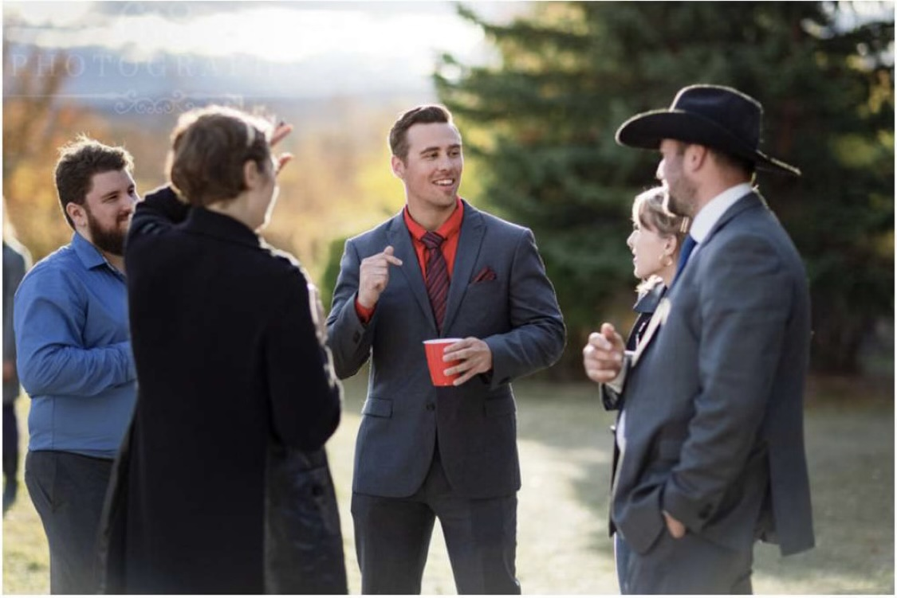
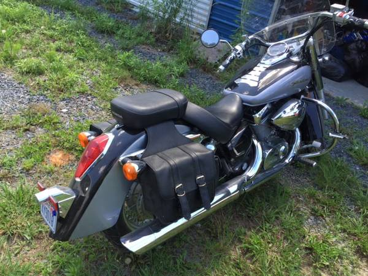
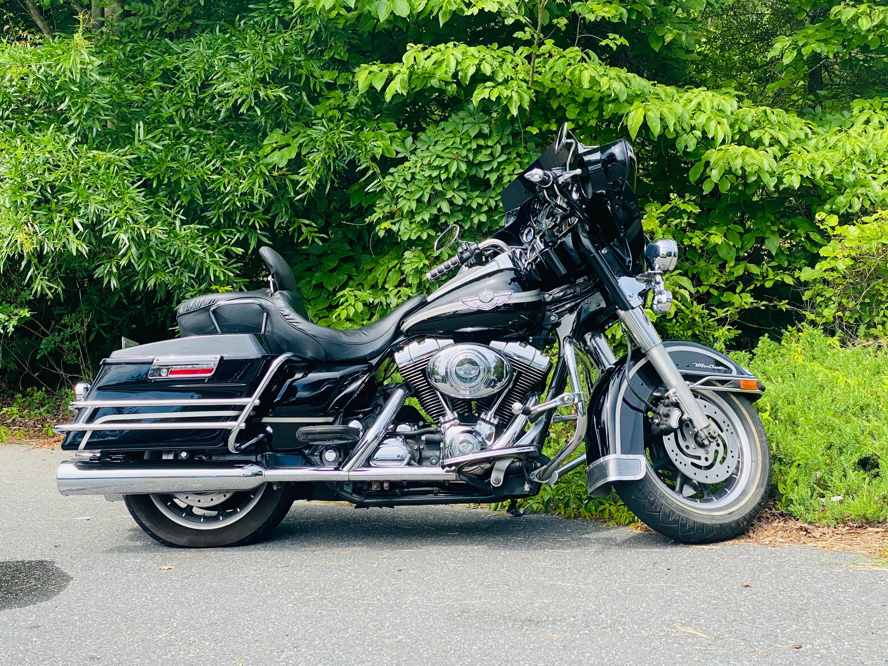
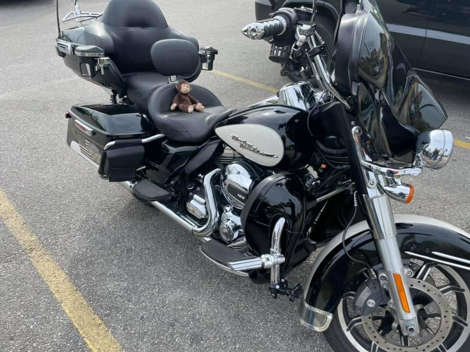
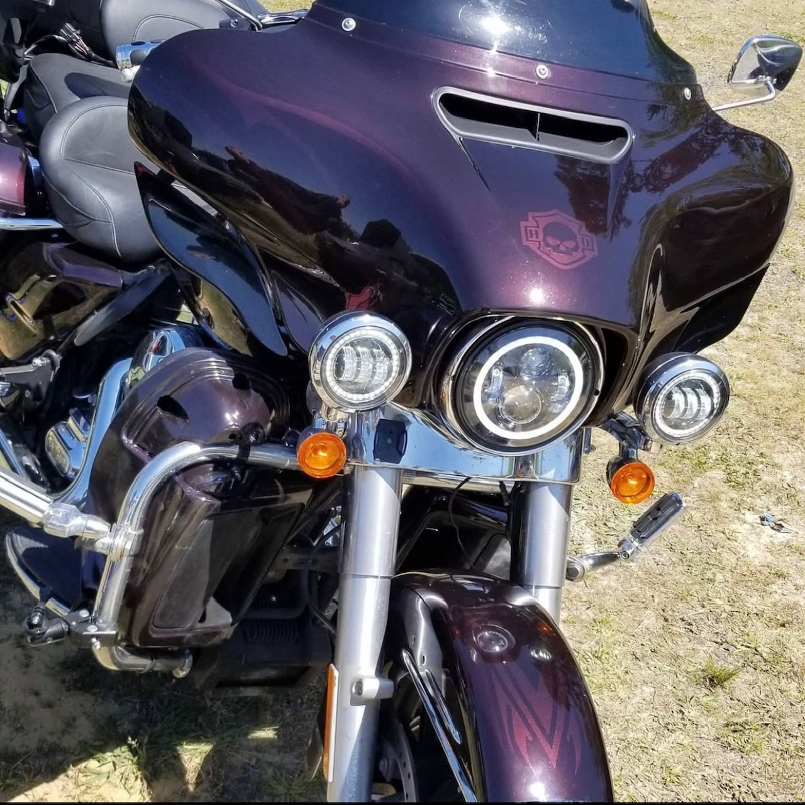
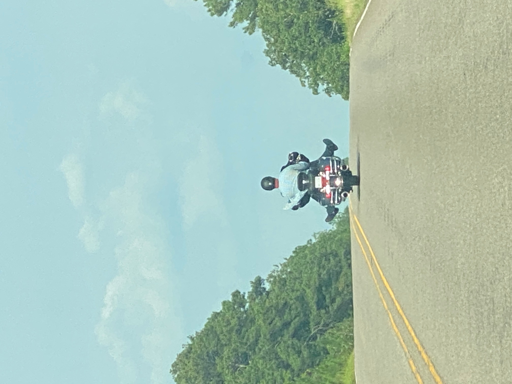
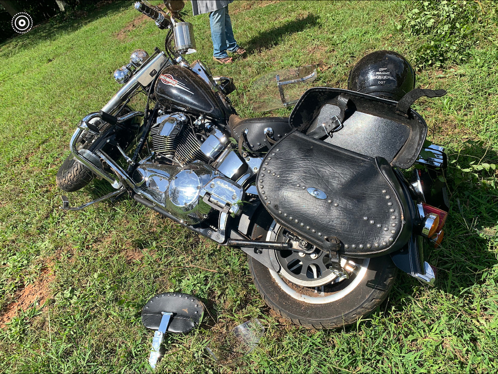
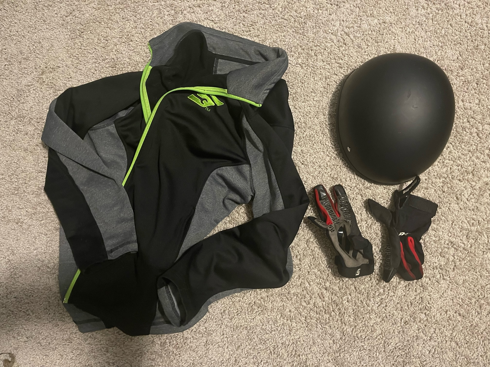

Home

Hello and welcome to this amazing page about a great, relatively new hobby for me. Please click the page tabs
to see different images about my hobby. If you havent guessed it yet, this page is dedicated to my love of
motorcycles.
About Me

I purchased my first motorcycle as soon as I could legally ride at 16. My father and mother had both acquired their own bikes at this point. My dad had always wanted one, but my mom had forbidden it until I reached a certain age. At this point in our lives, she finally relented.
My first bike was a simple Honda Shadow Aero 750. It was a good reliable bike. It did not have any wild or cool features, just two wheels and reliability. Most importantly, 16 year old me working full time was able to afford this bike.
Second Bike

The army made riding nonexistant at a certain point in my life, so I sold my first bike. However I had always intended on purchasing another bike one day. Finally, the time had come, and I made the decision to get another bike. So with my sudden influx of deployment cash, I went out and bought my second bike.
This second bike was worlds differently from my first bike. The first bike was a generally small bike, there wasnt much to it. This second bike was much larger, and had many bells and whistles that the previous did not have. It has the front fairing, bigger engine, cruise control, hard saddlebags, it had almost everything a kid could want. I still currently own this bike and will ride it till the wheels fall off.
Painting bikes


The above images are my dads bike. For his birthday, a friend of ours and myself decided to paint his bike. The process was long and gruiling, my first introduction to body work on anything. It required much attention to detail, and more hours then i care to think about. However, i loved doing it to the point i considered doing it as a side hustle.
Riding

Riding is amazing. There is no way to describe the feeling one gets from riding a bike on the open road. It is so freeing, noone can bother you, theres no texting, no calling, just the act of riding. Its so relaxing, I do not possess the vocabulary to adequetley describe the feeling of riding.
The Dangers of Riding


I have no misgivings to the dangers of riding. Being on two wheels with no additional protection is absolutely dangerous. One of the above images is my moms bike from when she wrecked her bike last year. I was actually deployed whenever i received the message from my dad letting me know what had happened. Therefor, i cannot stress enough to everyone, please be careful, and know you are accepting a large amount of risk. The other image above is showing you the minimum amount of gear you should wear to protect yourself while riding.